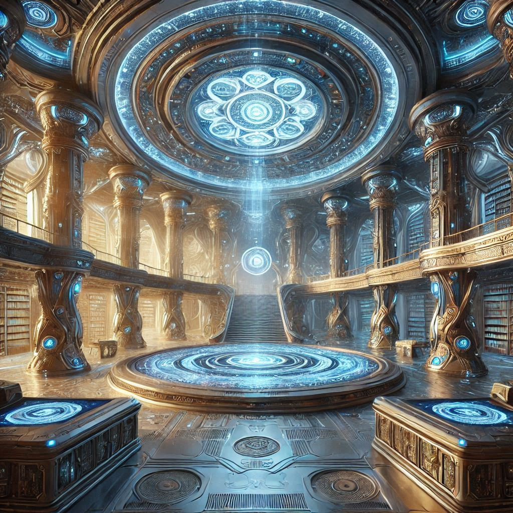
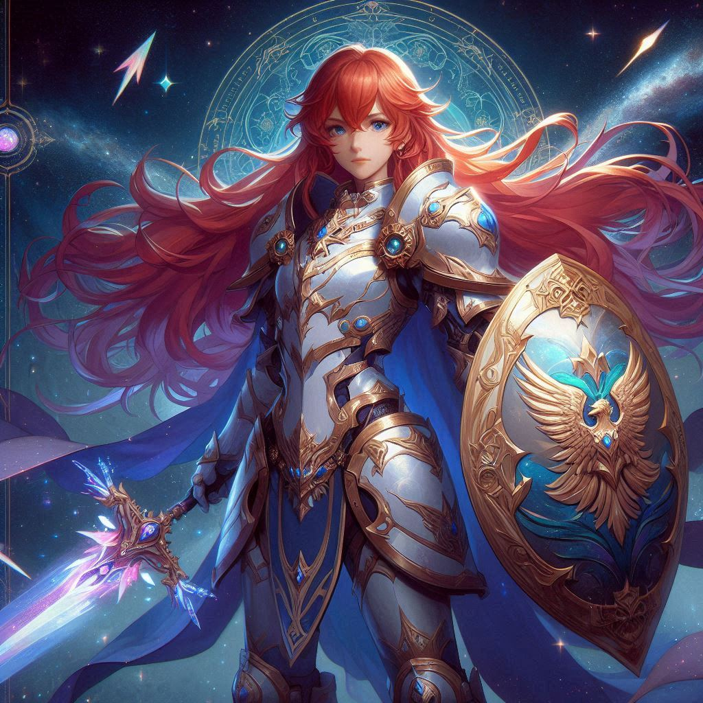
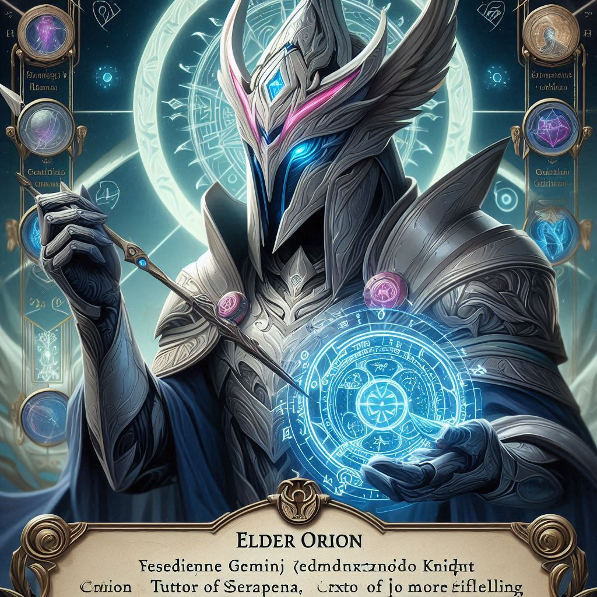
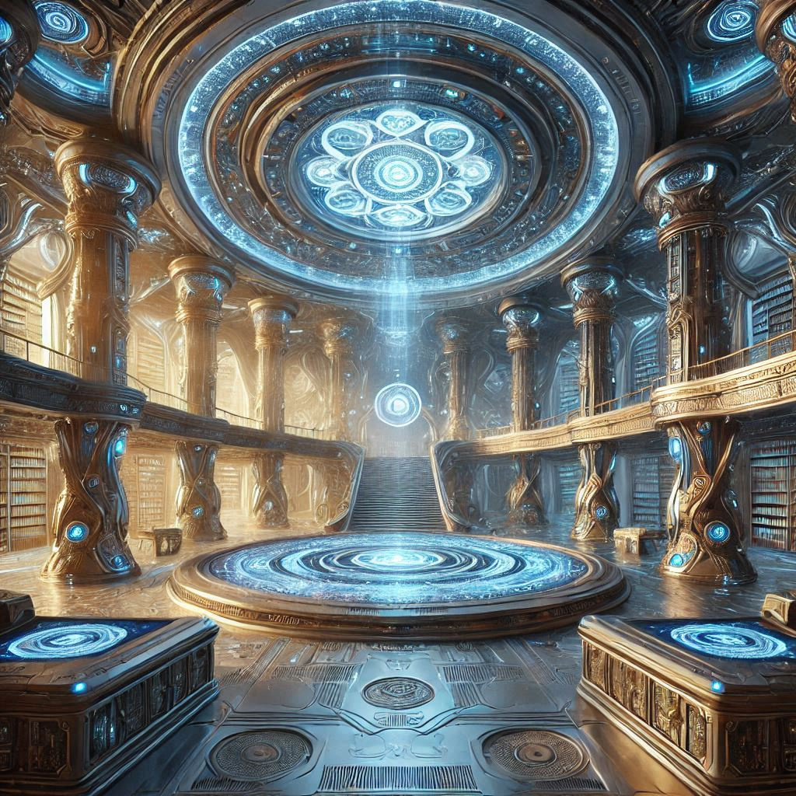
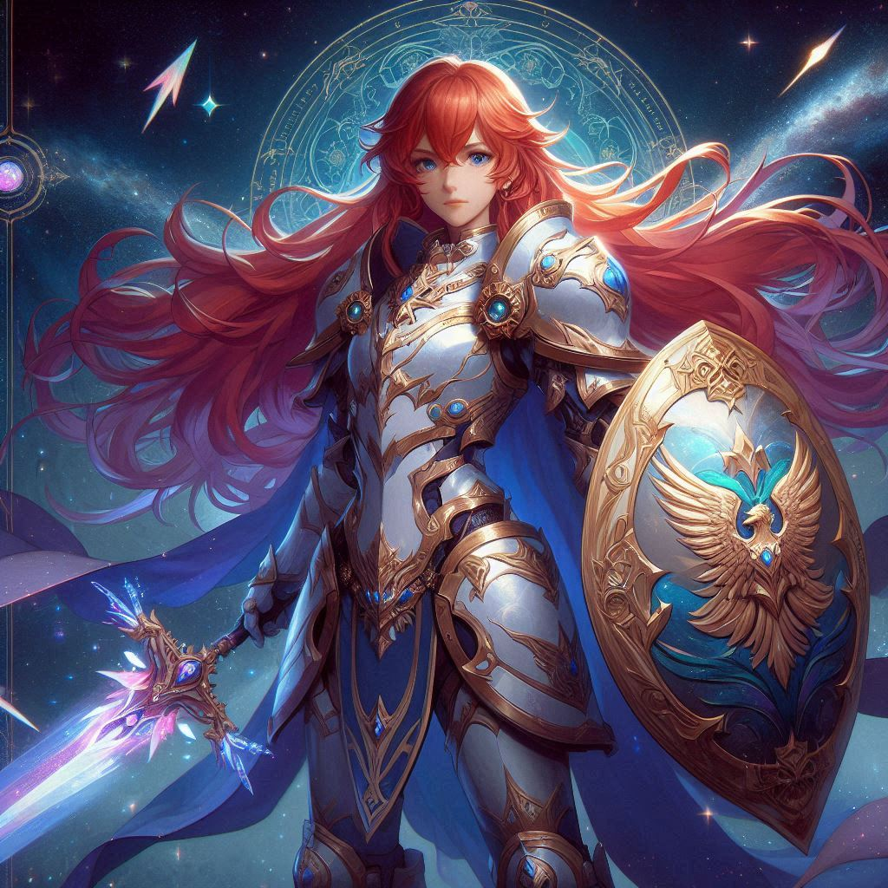
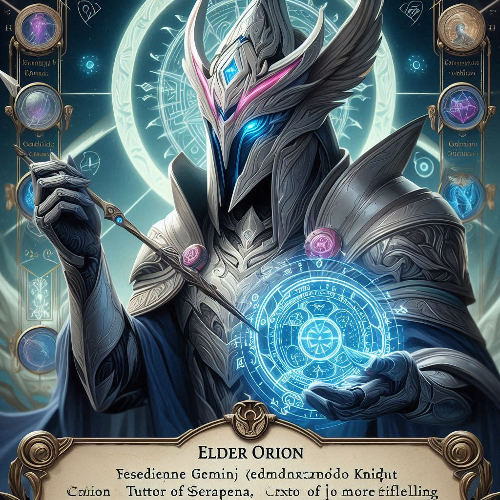
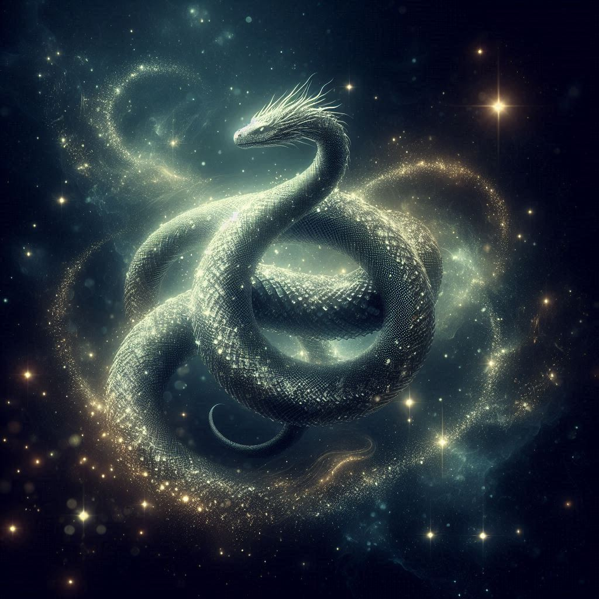
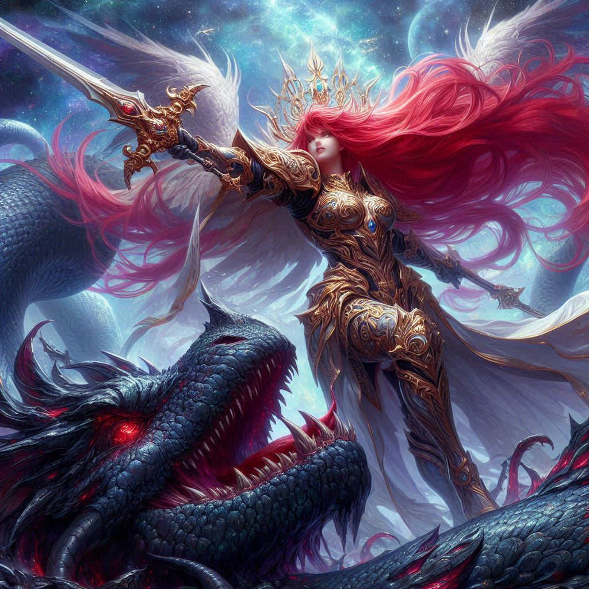

Chapter One: Birth of the Gemini Knight
In the quiet village of Astraea, nestled beneath the watchful gaze of the constellation Gemini, a child was born on the first day of the Gemini season. The stars aligned, heralding her arrival with a brilliant display of celestial lights. Her parents named her Seraphina, a name that echoed the fiery grace of the angels. From a young age, Seraphina exhibited the dual nature of her zodiac sign. She was both curious and contemplative, restless and reflective. Her mind was a whirlwind of thoughts, always seeking new knowledge and experiences. She spent her days in the village library, reading ancient texts about the stars and their mystical powers. Her nights were spent gazing at the heavens, feeling a strange connection to the celestial bodies. As Seraphina grew older, her inquisitive nature led her to discover a hidden chamber beneath the library. Inside, she found an ancient tome that spoke of the Gemini Zodiac Knights, warriors chosen by the stars to protect the realm from cosmic threats. The tome told of the Gemini Knight’s unique ability to harness the dual power of the stars, drawing strength from both Castor and Pollux, the twin stars of Gemini. Determined to fulfill her destiny, Seraphina began her training. She studied the arts of combat, honing her skills with a sword and learning to channel the energy of the stars. She trained under the guidance of Elder Orion, a wise and ancient warrior who had once been a Zodiac Knight himself. Under his tutelage, Seraphina grew stronger and more skilled, learning to balance the dual aspects of her nature.
 





Chapter 2: The Cosmic Confrontation
Years passed, and Seraphina blossomed into a formidable warrior. Her reputation as the Gemini Knight spread far and wide, and tales of her bravery and skill reached every corner of the realm. But with great power came great responsibility, and Seraphina soon faced her greatest challenge yet. One fateful night, the sky was torn asunder by a blinding light. A cosmic beast, known as the Void Serpent"Void Serpent", had emerged from the depths of the universe, intent on consuming the stars and plunging the world into eternal darkness. The beast was a monstrous entity, its body a writhing mass of shadows and its eyes burning with malevolent fire. Seraphina knew that she was the only one who could stand against the Void Serpent. Clad in her armor, which glistened with the light of the stars, she ventured forth to confront the beast. The battle was fierce, a clash of cosmic energies that shook the very foundations of the world. Drawing upon the twin powers of Castor and Pollux, Seraphina unleashed a torrent of starfire upon the Void Serpent. The beast retaliated with tendrils of darkness, but Seraphina’s dual nature allowed her to counter its attacks with both strength and cunning. She danced around the beast, her movements a blur of light and shadow, striking with precision and grace. In the end, it was her unwavering resolve and the unity of her dual nature that allowed her to prevail. With a final, devastating strike, Seraphina plunged her sword into the heart of the Void Serpent. The beast let out a deafening roar before disintegrating into a shower of stardust, its malevolent presence banished from the world. The skies cleared, and the stars shone brightly once more. Seraphina stood victorious, her heart filled with a sense of accomplishment. She had fulfilled her destiny as the Gemini Knight, protecting the realm.
 